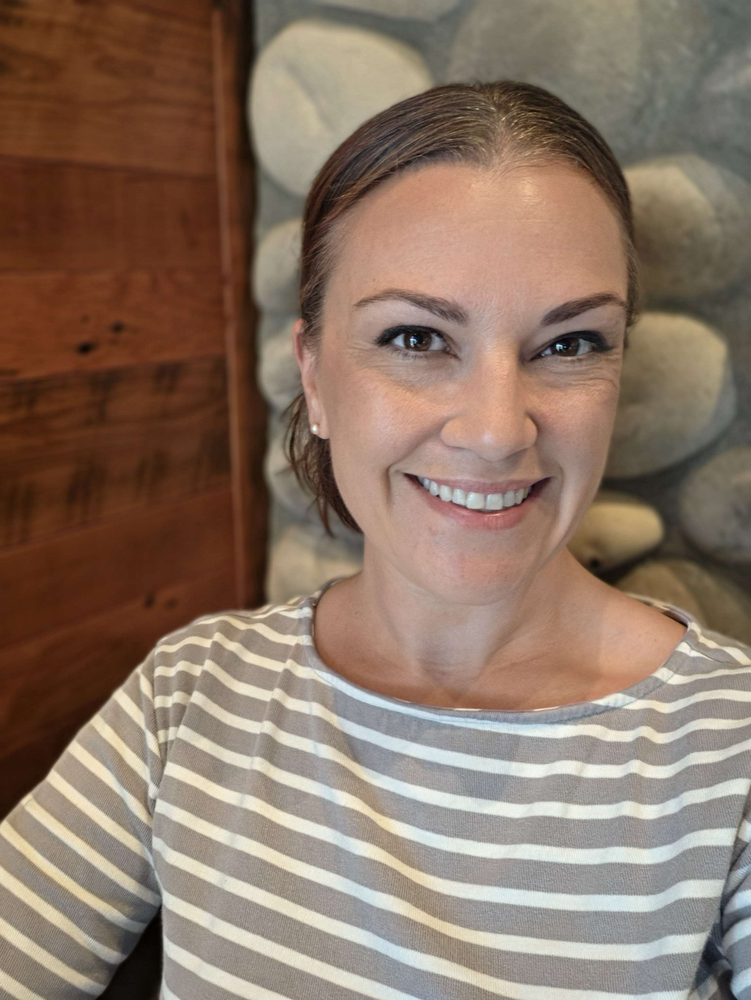

Meet Emma
Crestline Design Studio is built on a simple belief: our home shapes how we feel and how we move through our days. When a space is thoughtfully designed, everyday life becomes more supportive, grounded, and meaningful.
My approach as a designer is rooted in understanding how people live and feel in their spaces. I earned my Psychology degree from Western Washington University in 2011, a background that continues to guide how I think about comfort, flow, and emotional ease at home. I’m currently studying at Parsons School of Design, blending formal training with a lifelong love of interiors and a Pacific Northwest–inspired aesthetic—natural textures, soft palettes, and materials that bring warmth and depth.
My goal is to create homes that feel true to the people who live in them—spaces that offer ease the moment you walk through the door. Each project focuses on intentional layouts, thoughtful materials, and layered details that support daily life. Every decision is made with care, resulting in environments that function beautifully and feel genuinely your own.
